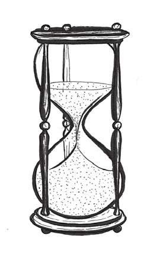

人们普遍认为沙漏是在8世纪的欧洲被发明和使用的。14世纪，意大利艺术家安布罗乔·洛伦泽蒂（Ambrogio Lorenzetti）创作的壁画《好政府的寓言》（Allegory of Good Government ）是首个证明沙漏曾被应用为计时器的例证。同时期的行船日志上也常常提及沙漏。
沙漏由两个玻璃球和一个狭窄的连接管道组成，沙子可以匀速从顶部漏到下方。顶部玻璃球一旦漏空，可将其倒置然后重新计时。相比水钟，沙漏尤其适用于海上航行的船只，因为它的计时不会被海浪影响，且沙漏中颗粒状的填充物（沙子、粉末状蛋壳及大理石）也不易受温度变化影响。事实上，在18世纪以前，人们航行时一直使用沙漏来测量时间、速度和距离。
计程仪绳
被船员用来测量速度的另一种工具是“计程仪绳”。“计程仪绳”是一根长长的绳索，上面有等距打好的结，一端连在船上，另一端连着一块木板。船员把木板从船上扔到海里，开船后缠在卷轴上的绳索就会被拉长，船员就可以数绳索上出现的节数来测距。同时会设置一个固定时间（通常用一个小小的沙漏），然后通过计算绳索“节数”来测量航速。
下一章，我们会介绍计时史上第一个可靠的海上时钟（海洋计时器），以及那位伟大发明家的非凡人生。